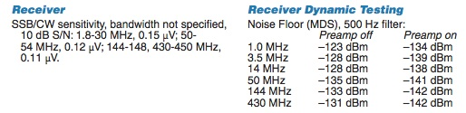
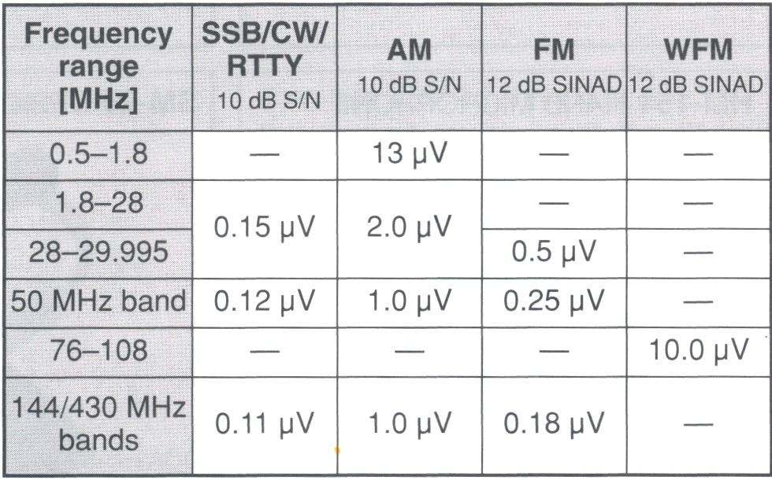
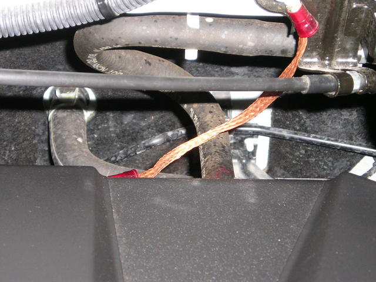

Basics
Signal-to-noise ratio (S+N/N ratio, or SNR for short) is one technical aspect not too many amateurs give a second thought to. Nonetheless, it is important to have at least a basic understanding of what it is, and what effect it can have on our ability to hear another station. Keep in mind: any ratio higher than 1:1 indicates more signal than noise, and the clearer the reception.
SNR is defined as the ratio between the desired signal and the background noise. It may be expressed as power or voltage, but in our case we use voltage. The noise portion is comprised of atmospheric noise and localized (man-made) noise. This is especially true in a mobile scenario where there is an abnormal amount of localized noise generated by the ignition system and the various on-board electronics. Perhaps a better description of the noise portion would be hash, or frying noise, as that's what it sounds like when emanating from the speaker — often high-pitched and rather tiring to listen to. Thus it behooves us to do what we can to reduce it.
SNR is expressed as a differential between the voltage of the desired signal and the voltage of the noise:
SNR = 20 × log10(Vs + Vn / Vn)
Where Vs is the strength of the desired signal and Vn is the voltage of the noise portion. As an example: if the incoming Vs is 25 µV and the noise is 2 µV, applying the formula gives an SNR of 22.6 dB — an easily copied signal. If the noise voltage is higher than the signal voltage, the ratio is negative and you can't hear the other station.
Unfortunately, that's the case in too many mobile installations, at least until the incoming signal is extremely strong (>50 µV, perhaps more).
Real-World Receiver Specifications


Let's look at the specifications of a real-world receiver: the Icom IC-7000 (courtesy of the ARRL). A signal strength of 0.15 µV yields an SNR of 10 dB. Sounds pretty good — but there's a minor problem. This figure represents an SNR above the internal noise floor of the receiver. What actually happens in the real world is much more complex.
The table also lists the 7000's Dynamic Range when using a 500 Hz bandwidth filter. Dynamic range is the ratio between the strongest signal and the minimum discernible signal, within a specified bandpass (typically limited by the IF and/or roofing filters' bandwidth). Note that Dynamic Range becomes somewhat worse as the bandwidth increases. We also have to deal with phase noise generated by the various components comprising the receiver portion of the transceiver. Even worse, we have to deal with changes in Dynamic Range caused by the over-zealous use of noise blankers and DSPs. And we have the SINAD measurement (Signal to Noise and Distortion), which although typically used with FM operation, can be applied to SSB as well.
Automatic Gain Control
Before going further, we need to understand AGC (Automatic Gain Control). It is a closed-loop circuit built into every modern transceiver. In very basic terms, its purpose is to provide an even audio output despite variations in the incoming signal strength. It may be applied at the very front end of the receiver (first RF amplifier) or within one of the IF stages. Sometimes it is adjustable (high, medium, low, and off), and sometimes it isn't.
Whenever we make any kind of before/after comparison, we have to consider the action of the AGC circuitry. For example, if we reduce a large RFI source by proper bonding, the perceived level of that RFI might not seem to change — because the AGC circuitry increased the receiver's gain once the RFI was reduced. Basically the same thing happens when we try to compare one antenna with another. Therefore, if we want to make a before/after comparison, we need to turn off the AGC (if possible) and use the RF gain control instead.
Almost none of the so-marked RF gain controls are actually in the RF section (true front end). In fact, most are within the first IF section. Their output is fed to the S meter's circuitry, which is a nonlinear function 99% of the time — thus not very accurate. Turning off the AGC always disables the S meter. We also have to consider that a receiver's front end hears more than you do from the speaker. A strong nearby signal may pump the AGC and cause distortion in the signal you're trying to copy. Be very careful about making generalized before/after comparisons by noting what your S meter reads, or what you hear from the speaker.
Signal Strength
HF mobile antennas do not exhibit gain — they have negative gain. In other words, they're lossy. How lossy depends on many factors, most of which are covered in the Antenna Efficiency article. Therefore, if we want to increase the incoming signal strength, our only alternative is to reduce the antenna's overall losses.
There is a small caveat, however. As the antenna becomes more efficient at picking up the signal, it is also more efficient at picking up the noise as well. So improving the antenna without suppressing the localized noise doesn't improve matters very much — receiver Dynamic Range benefits notwithstanding.
The most important attribute is where and how the antenna is mounted. When an antenna is mounted low, we force a large portion of the antenna's return current to flow through the lossy surface under the vehicle, rather than through the less-lossy superstructure. When abbreviated mounting schemes are used (mag, clamp, clip, and lip mounts), we further increase the already dominant loss factor (ground loss) in the efficiency equation.
Overall antenna electrical length is also important, because radiation resistance is a square factor of the electrical length. In other words, increase the length by 50%, and we get a 100% increase in radiation resistance. Probably the best example of excessive ground loss and excessive antenna loss are short, stubby, poorly mounted, low-Q antennas.
It is important to select an antenna which maintains a Q of at least 200 throughout its bandwidth. This rules out about 80% of the current batch of commercially available, remotely tuned, HF antennas. Q higher than 300 is difficult to achieve and offers little advantage over 200, unless the antenna is properly mounted. Once the Q drops to under approximately 100, the SNR we're striving for drops drastically. Really lossy and improperly mounted antenna installations are better noise antennas than signal antennas — especially so if common mode isn't choked off.
The Noise
Every junction of every solid-state device functions as a square-law detector. The strength of the RF signal detected increases or decreases to the square of the RF level at the junction detecting the signal. In other words, the strength of the detected RF changes by twice the number of dB that the signal changes. Therefore, if we reduce the offending signal by 3 dB, the detected signal will be reduced by 6 dB. Liken it to the old adage that an ounce of prevention is worth a pound of cure.
No in-motion mobile is electrically quiet. From ignition RFI, rolling static, fan belts, fan motors, and CPUs ad nauseam, keeping the RFI noise level relatively low is (or can be) a monumental task. But it is worth every effort. One of the myriad methods to reduce localized noise is bonding. Properly placed ferrite beads are another way, as are proper common mode chokes. Receive bandwidth plays a part as well — the narrower the filter, the better the dynamic range. However, too narrow, and intelligibility becomes a problem.
The question remains: how far can localized noise be reduced? There is no clear-cut answer, because every installation is different. This said, even a minimal effort can reduce localized noise by as much as 6 dB (approximately 1 S unit), and sometimes a great deal more. The photo shows a real example: a single 4-inch long ground braid installed between a threaded boss on the rear cylinder head and a firewall cable bracket reduced the ignition noise level on a Honda Ridgeline by approximately 10 dB. A single braid. Four inches long.
The Results
Let's assume the incoming signal strength is 2 µV and our background noise level is 0.7 µV. Applying our formula, the SNR would be approximately 9 dB. This is right on the ragged edge of solid Q5 copy, even though this would be about an S3 signal. If we reduce the background noise level by 3 dB (down to 0.35 µV), then the SNR would be nearly 15 dB — sufficient for Q5 copy in most cases.
We could do the same by increasing the incoming signal strength by 3 dB (to 4 µV). If we both increased the receive signal by 3 dB (approximately S5) and reduced the noise by 3 dB (approximately S1), the SNR would be approximately 21 dB, which is sufficient for armchair copy.
In all fairness, the above examples do not take receiver Dynamic Range characteristics and/or filter bandwidth into account. However, they do illustrate the importance of suppressing localized (in-vehicle) noise — and that's the point. With proper filter choices, proper antenna selection, proper mounting, and proper noise suppression, we can achieve easy copy instead of nothing but background noise.
One more important point: one can easily present a case where an increase in antenna efficiency of just 1 dB can make a significant change in the SNR — enough in fact to allow a conversation with another station which otherwise could not be carried on.
Measuring SNR


There is a way to measure SNR comparatively, but it does require a piece of hardware and a stable signal source. The piece of hardware is a Sinadder, as made by Helper Instruments. Although meant for use with commercial FM transceivers (SINAD = Signal to Noise and Distortion), it is usable for SSB as well. Helper is out of business, and their successor stopped making the device. However, used ones are readily available online. Used pricing varies from as low as $20 up to $200 depending on the model and condition.
A signal source is also needed. A transceiver running very low power (approximately 1 watt) into a dummy load is one source, and an antenna analyzer is another. WWV or CHU Canada can be used as well.
Setup is really easy. Connect the input of the Sinadder to the audio output of the transceiver. Turn off the AGC in the transceiver and back off the RF gain control. Turn on the Sinadder and bring up the RF gain until the meter just comes off full scale. Then adjust the VFO until the Sinadder shows the lowest reading — this will occur when the receiving heterodyne is right at 1 kHz. Make note of the reading, then make your changes.
This method will show if indeed there has been a change in SNR. It will show that some additions (like ferrite chokes on power cables) don't help at all. It will also show the degradation in SNR caused by the noise blanker. The ideal scenario is to reduce the localized RFI level to a point where use of a noise blanker isn't needed.
How the Sinadder works: it is really a distortion analyzer. The 1 kHz notch filter removes the 1 kHz modulation, and anything left over is extraneous noise. The level of the leftover noise is what the meter measures, which explains why the meter scale reads backwards.
Modern Considerations
The principles covered in this article are fundamental physics and have not changed. What has changed is our ability to measure and characterize the noise environment in a mobile installation.
Software-defined radios with built-in spectrum displays make it possible to see the noise floor in real time and to directly observe the effect of adding bonding straps, repositioning ferrite chokes, or routing cables differently. The before-and-after comparison that required a Sinadder and a stable signal source can now be done visually on the waterfall display of a modern SDR-based transceiver. This doesn't replace careful measurement, but it does make the relationship between physical changes and SNR improvement much more intuitive.
If you want to quantify your noise floor improvements as you work through a bonding project, set up on a quiet HF band (40 meters in the evening works well) with the engine running and the radio in receive only. Note the S meter reading with no signal present. That's your noise floor reference. After each bonding addition, recheck. S unit drops are directly meaningful: each S unit is approximately 6 dB, which per the square-law detection principle means a 12 dB reduction in the detected interference level. This kind of systematic measurement will tell you exactly where your bonding effort is paying off.
The NanoVNA and similar modern vector network analyzers also enable measurement of antenna Q in the field, which allows direct verification that your antenna is meeting Alan's Q ≥ 200 criterion. This was difficult to do practically when the original content was written — it now takes about 5 minutes with a $100 instrument.